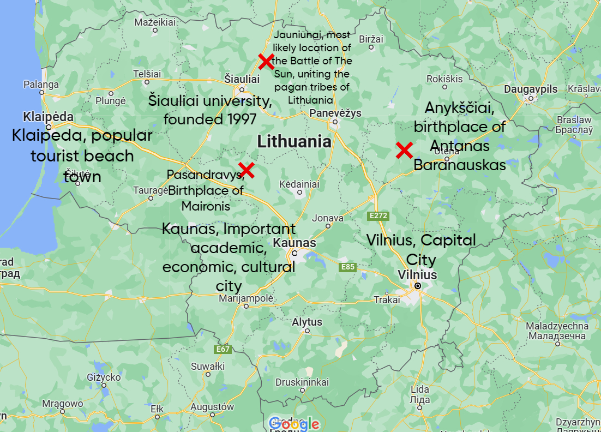

{kind=link}

Meeting dates and times: Sundays, 4 pm. (Start Date: April 23, 2023; End Date: May 21, 2023)
Zoom link: https://cwm.zoom.us/...
Course Description
This course prepares you for the Summer Study Abroad Program in Vilnius. We will engage in some activities to get to know each other better, discuss W&M policies and protocols for studying abroad, address your concerns regarding an immersion program, and discuss logistical matters. We will also familiarize ourselves with the history, geography, and culture of Lithuania.
Our one-credit course in Vilnius, "Russia in Context," will build on the material covered in this prep-course.
April 23
Topics—Introductions of All Kinds!
In this first session we will focus on many kinds of introductions:
introducing the syllabus and texts,
introducing ourselves to one another.
Tests you need to take before the beginning of the program: OPIc, BEVI
After Class Assignment: Задание после класса, for April 30th
1. Go on Flip to do a self-introduction! The link to Flip is ин the BlackBoard site. Post it and visit each other’s video. Try to get to know more about our classmates and find someone to be your partner for the final
“1-day Field Trip Plan”
and
also for your Russian 393 Cultural Site Project Proposal.
Знакомство всех видов На этом первом занятии мы сосредоточимся на многих видах знакомства: знакомство с программой и текстами, знакомство друг с другом.
Зайдите на Flip, чтобы представиться! Разместите его и просмотрите видео друг друга. Постарайтесь узнать больше о наших одноклассниках и найдите кого-нибудь, кто будет вашим партнером для окончательного «Плана однодневной экскурсии»
а также
для вашего Предложения проекта на сайте Rusn 393.
Студенты должны видеть Предложения друг друга, поэтому его необходимо поместить заранее в Пятницу перед занятием
2. Read the Handbook.
3. Download WhatsApp app
4. Download Bolt app.
30ого апреля
More Introductions: Who is Sitting Next to You?
Reading a Map: Locating Course-specific Sites on a Map of Vilnius.
Figuring Out Public Transportation.
How to get to the hotel from airport and from the hotel to the university.
Communication in Lithuania (sim cards, international plans)
After Class Assignment for May 7:
1. Read Eyewitness Travel Lithuania pp. 206-219 (on the Blackboard under Readings)
2. Bring TWO facts to share about Lithuania for our next section. We will share our facts together and do some other introductory activities.
3. Create a google map (or other kind of map if you know of a better site) and map key geographical, historical, and cultural sites in Lithuania. Share access to this map with me by May 6. This map must include at least the following:
a. Three major cities, mountains, or lakes of Lithuania
b. At least one battlefield in Lithuania and its significance
c. One or two major universities and when they were established
d. Two major Lithuanian literature icons, where they were born, and a little biographical background
4. Read Adrian Furnham “Foreign Students Education and culture shock” (on the Blackboard under Readings)
Седьмого мая
1. Intro to Lithuania and the Russian Empire
Origins and Early History of the Lithuanian State.
the Polish-Lithuanian Commonwealth.
Lithuania under the Tsars
(Before this section, you need to prepare two facts about Lithuania to share with your classmates.)
2. Culture Shock
After Class Assignment for May 14:
1. Recommended reading: explore Eyewitness Travel Lithuania pp. 244-89 (on the Blackboard under Readings)
Четырнадцатого мая Safety and Health Matters Workshop (Nick Vasquez and Susan Manion) About the cities we will stay: Vilnius, Kaunas, Klaipeda. After Class Assignment for May 21 (this class will be longer than one hour) In teams of two prepare your Presentation of the 1-Day Field Trip follow up with Q&A. Each team has 7 mins. In teams of two prepare a Presentation of Site proposal. Each team one has 5 minutes to introduce your proposal. Slides from class.
Safety Information
click this link
Двадцать первого мая
Presentations/Доклады
1. Museum of Occupations (Kayla and Olivia)
2. European Humanities University (George and Weston)
3. Lithuanians Helping Ukraine (Jason)
4. Russian Othodox Church in Vilnius (Liam and Alex)
5. Basketball in LT and the USSR (Nathan)
6. Rasos Cemetery (Savannah and Katrine)
Alex's map (a story map)
link to the map
Katrine's map
Weston's map
George's map
Nathan's map
Kayla's map
Liam's map

Olivia's map
Jason's map
Open a PDF file link
Sasha's sample map
Laundry in Vilnius:
In the hotel: 1 set - 3,5 euros, drying - 3 euros.
Also near to the hotel are these self service laundries:
https://www.londris.lt/t-en/vilnius-1/naujamiestis-1
https://www.londris.lt/t-en/vilnius-1/naujamiestis-2
Average load is about 6 kg, maxi - about 10-12.